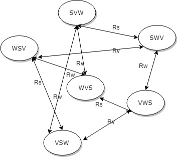

Modelling
Epistemic logic is the logic of knowledge and belief. It provides insight into the properties of individual agent, which is very suitable to represent player's knowledge and belief in this game. Moreover it can give us insights of the dynamics of the game by appropriate inquiry.
Knowledge
Generally, we say that an agent knows something by finding that true in all the Kripke worlds accessible by the agent. For example, werewolves know each other's identity, so for every world a werewolf can access, it holds that its pee's identity being werewolf is true.
Belief
Belief is "weaker" in some way to knowledge. An agent believes something is true by finding that true in all the Kripke worlds accessible by the belief relationship, instead of a knowledge relationship. For example, a villager can believe a werewolf as peer by their careful deception.
Public announcement
Public announcement can be made to audience, informing them about the information of the world. There are different ways to make announcement. In this game, each player get their initial identity card by announcement, and is informed other's death by announcement as well.
Higher order knowledge
There can also be knowledge about knowledge, or further higher knowledge about such. For example, a werewolf knows that its peer knows it is a werewolf. Similarly, a werewolf knows that its peer knows that it knows it is a werewolf.
Model simplification
Simplifications need to be made to limit the game in scope. First of all, it only takes the standard game setting with 12 players. An important simplification in this model is to let Seer able to make truth public announcement. This is typically true during human games and gives game dynamics, faster to reach the ending.
Features
This project mainly focuses on the discussion session during each morning, unlike the werewolves project done in 2014 focusing on the voting behavior. In general, what an agent can say is limited. Otherwise the proposition space is too vast if they can say whatever they want.
To reach the goal of experimenting with higher order knowledge, the agent will make their claims sometimes by deception, and the effect of different deception depths will be compared in the results.
The most important feature in this project is to add a fuzzy logic approach, in order to fully utilize agents' knowledge about the model. For each player, there is a record about other players' credibility, initially set to zero. Each time there is a discrepancy between the players existing knowledge(belief) and new knowledge, the origin of false knowledge will increase their score, indicating that they have been distrusted.
More specifically, if there is discrepancy between someone's claim in player 1's set, and it turns out not true by announcement, such someone's discredibility to agent is increased. Additionally, if their is a discrepancy between two players' claim, the person with lower discredibility score will win and the other will receive further higher discredibility.
Kripke Model
Below shows an example Kripke model with three players, namely Seer(S), Villager(V), and Werewolf(W). For each world there are undrawn reflective relations for each agent.
Zero order knowledge
It is clear that in such model each player only knows the identity of itself, but not others. This is modelled as a "naive" situation in this game. Where each player only knows identities given by initial settings and rules. For example, the werewolves still know who is not their peer in the beginning, but unable to make further throughout the game.
First order deception
Each player can either tell the truth or the lie during the speech session. Here, the player can get use of the knowledge&belief model and some of the relation arrows will disappear as some world becomes inaccessible by given knowledge and belief.
Second order deception
For the second order deception, each player can choose to say whether they know identity of someone else. Typically, this gives more higher information about axioms. This is expected to help with the fuzzy logic approach.
Third order deception
The third order deception gives each player the opportunity to say whether they know if others know their identity during the discussion session. This is also expected to help with the fuzzy logic approach.